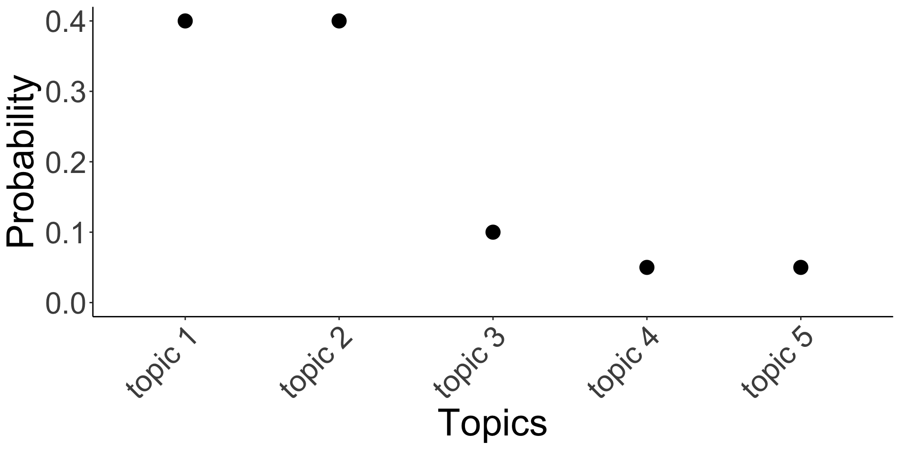

| book | first_sentence |
|---|---|
| Last Samurai | My father’s father was a Methodist minister. |
| Beloved | 124 was spiteful. Full of Baby’s venom. |
| Jane Eyre | There was no possibility of taking a walk that day. |
3rd session
2025-06-25
| book | first_sentence |
|---|---|
| Last Samurai | My father’s father was a Methodist minister. |
| Beloved | 124 was spiteful. Full of Baby’s venom. |
| Jane Eyre | There was no possibility of taking a walk that day. |
Document-feature matrix of: 3 documents, 21 features (57.14% sparse) and 0 docvars.
features
docs my father's father was a methodist minister . 124 spiteful
Last Samurai 1 1 1 1 1 1 1 1 0 0
Beloved 0 0 0 1 0 0 0 2 1 1
Jane Eyre 0 0 0 1 1 0 0 1 0 0
[ reached max_nfeat ... 11 more features ] [1] "i" "me" "my" "myself" "we" "our"
[7] "ours" "ourselves" "you" "your" [1] "New South Wales"[1] "Sydney is in New South Wales and Toronto is not."Tokens consisting of 1 document.
text1 :
[1] "Sydney" "is" "in" "New_South_Wales"
[5] "and" "Toronto" "is" "not"
[9] "." | ngrams | n |
|---|---|
| I_not | 344 |
| Mr_Rochester | 332 |
| I_thought | 136 |
| St_John | 132 |
| zodiacsign | word | n | tf | idf | tf_idf |
|---|---|---|---|---|---|
| Aries | warns | 5 | 0.0001862 | 2.484907 | 0.0004627 |
| Cancer | organize | 7 | 0.0002437 | 1.791759 | 0.0004366 |
| Cancer | overwork | 5 | 0.0001741 | 2.484907 | 0.0004325 |
| Gemini | mood | 6 | 0.0002257 | 1.791759 | 0.0004044 |
| Virgo | digesting | 4 | 0.0001519 | 2.484907 | 0.0003775 |
| Virgo | trace | 4 | 0.0001519 | 2.484907 | 0.0003775 |
| Cancer | procrastinate | 4 | 0.0001392 | 2.484907 | 0.0003460 |
| zodiacsign | all |
|---|---|
| Aries | warns; vesta; fearful; chase; bait |
| Cancer | organize; overwork; procrastinate; scuttle; unrelenting |
| Gemini | mood; output; admit; faces; harrowing |
| Virgo | digesting; trace; liberate; someone’s; final |
| Pisces | wasted; missteps; node; shoes; prayer |
| Libra | proof; inevitably; recognizable; reference; disguise |
| Scorpio | skate; advocate; knots; bottle; meditating |
| Aquarius | saves; consult; yearnings; sexy; athene |
| Leo | trines; blessed; regrets; leo; agree |
| Capricorn | signify; neighborhood; funny; noticing; rested |
| Taurus | painfully; virgin; divest; fights; 15th |
| Sagittarius | rolodex; distorted; coat; reinvest; benefactors |

# A tibble: 11 × 2
date text
<date> <chr>
1 2024-02-06 "Minutes of the Monetary Policy Meeting of the Reserve Bank Board…
2 2024-03-19 "Minutes of the Monetary Policy Meeting of the Reserve Bank Board…
3 2024-05-07 "Minutes of the Monetary Policy Meeting of the Reserve Bank Board…
4 2024-06-18 "Minutes of the Monetary Policy Meeting of the Reserve Bank Board…
5 2024-08-06 "Minutes of the Monetary Policy Meeting of the Reserve Bank Board…
6 2024-09-24 "Minutes of the Monetary Policy Meeting of the Reserve Bank Board…
7 2024-11-05 "Minutes of the Monetary Policy Meeting of the Reserve Bank Board…
8 2024-12-10 "Minutes of the Monetary Policy Meeting of the Reserve Bank Board…
9 2025-02-18 "Minutes of the Monetary Policy Meeting of the Reserve Bank Board…
10 2025-04-01 "Minutes of the Monetary Policy Board Meeting Sydney â\u0080\u009…
11 2025-05-20 "Minutes of the Monetary Policy Board Meeting Hybrid â\u0080\u009…Corpus consisting of 11 documents.
2024-02-06 :
"Minutes of the Monetary Policy Meeting of the Reserve Bank B..."
2024-03-19 :
"Minutes of the Monetary Policy Meeting of the Reserve Bank B..."
2024-05-07 :
"Minutes of the Monetary Policy Meeting of the Reserve Bank B..."
2024-06-18 :
"Minutes of the Monetary Policy Meeting of the Reserve Bank B..."
2024-08-06 :
"Minutes of the Monetary Policy Meeting of the Reserve Bank B..."
2024-09-24 :
"Minutes of the Monetary Policy Meeting of the Reserve Bank B..."
[ reached max_ndoc ... 5 more documents ]minutes_dfm <-
minutes_corpus |>
tokens(
remove_punct = TRUE,
remove_symbols = TRUE
) |>
dfm() |>
dfm_trim(min_termfreq = 2, min_docfreq = 2) |>
dfm_remove(stopwords(source = "snowball"))
minutes_dfmDocument-feature matrix of: 11 documents, 1,582 features (52.55% sparse) and 0 docvars.
features
docs minutes monetary policy meeting reserve bank board sydney â 5â
2024-02-06 1 14 28 9 2 5 7 1 3 1
2024-03-19 1 16 27 10 2 11 6 1 12 1
2024-05-07 1 10 18 14 2 4 9 1 4 1
2024-06-18 1 8 20 15 3 6 7 0 5 0
2024-08-06 1 13 18 17 6 11 7 1 12 1
2024-09-24 1 20 34 15 4 8 8 0 12 0
[ reached max_ndoc ... 5 more documents, reached max_nfeat ... 1,572 more features ]A topic model with 5 topics, 11 documents and a 1582 word dictionary.Topic 1 Top Words:
Highest Prob: inflation, members, growth, rate, policy, market, labour
FREX: real, range, high, subdued, inflation, number, underlying
Lift: moderation, lower-than-expected, taxes, centred, general, manner, proves
Score: moderation, arguments, 25â, november, lowered, number, december
Topic 2 Top Words:
Highest Prob: policy, members, global, inflation, growth, rate, monetary
FREX: tariffs, trade, global, reduction, australian, basis, uncertainty
Lift: tariff, chains, justified, news, 2012, almost, announcements
Score: tariff, tariffs, 25â, liquidity, april, chains, far
Topic 3 Top Words:
Highest Prob: members, financial, growth, inflation, policy, market, conditions
FREX: system, stability, financial, borrowers, banks, lending, households
Lift: landing, non-bank, non-banks, provision, service, affecting, capital
Score: capital, system, vulnerabilities, borrowers, provision, liquidity, stability
Topic 4 Top Words:
Highest Prob: inflation, members, rate, growth, market, target, labour
FREX: may, previously, return, march, implied, timeframe, assessed
Lift: notable, relationships, surprise, surprised, 25, accurately, assistance
Score: budgets, saving, march, hours, worked, steady, revised
Topic 5 Top Words:
Highest Prob: members, growth, policy, inflation, monetary, market, noted
FREX: september, productivity, november, stance, reserves, sector, future
Lift: consideration, 3.5â, accommodate, accommodative, arise, differing, enable
Score: consideration, september, election, reserves, system, better, expenditure